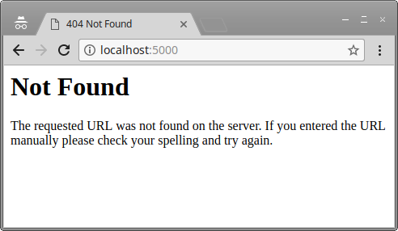
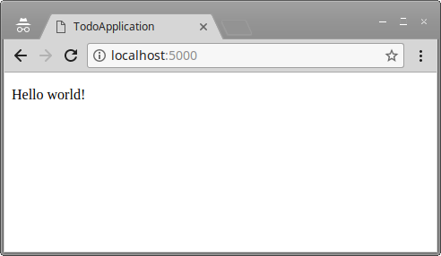
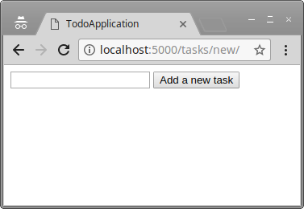
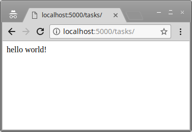
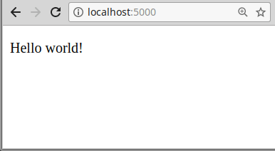

-
Githubissa olevan projektin rakenne on selkeä
- erillinen kansio sovellukselle
- erillinen kansio dokumentaatiolle
- sovelluksen toiminnallisuutta jaoteltu kansioihin
-
Projektissa käytössä tietokanta sekä yksi tietokohde (tietokantataulu).
- tietokannasta voi hakea tietoa
- tietokantaan voi lisätä tietoa
- tietokannassa olevaa tietoa voi päivittää
- tietokantaa käytetään paikallisesti SQLite-tietokannanhallintajärjestelmän avulla
- Projektissa on näkymät (html-sivut) tiedon listaamiseen, tiedon lisäämiseen sekä tiedon päivittämiseen (mikäli käyttötapausten kannalta oleellista). HTML-sivujen tarjoama toiminnallisuus yhteydessä Flaskin kautta tietokantaan.
-
Dokumentaatio kehittyy.
- Projektin päädokumentti (juuren README.md) sisältää aihekuvauksen.
- Projektin päädokumentti (juuren README.md) sisältää linkin Herokussa toimivaan sovellukseen.
- Dokumentaatiokansiossa sovelluksen toiminnallisuuden kannalta oleelliset käyttötapaukset tai user storyt (kts. esimerkkejä).
- Dokumentaatiokansiossa hahmotelma tietokantakaaviosta.
- Projektin päädokumentti (juuren README.md) sisältää linkit käyttötapauksiin tai user storyihin sekä tietokantakaaviohahmotelmaan.
- Kirjoita dokumentaatio Markdown-muodossa. Voit katsoa vihjeitä muotoiluun esimerkiksi täältä.
- Commit-viestit githubiin järkeviä.
- Githubissa ei turhia tiedostoja (virtuaaliympäristöä kuvaava kansio, cachet, käyttöjärjestelmäkohtaiset tiedot..).
Tietokantasovellus-kurssin toisen viikon materiaali sisältää esimerkin tehtävien hallintaan tarkoitetun sovelluksen luomisesta. Materiaalissa luodaan ensin hieman isommalle projektille sopiva projektirakenne, jonka jälkeen luodaan tehtävien hallintaan tarvittavaa toiminnallisuutta projektia varten. Esimerkin keskiössä on tietokannan käyttö valmiin ORM-kirjaston kautta sekä tietokannan ja näkymien yhteiskäyttö.
Huomaathan, että materiaali ei sisällä kaikkea harjoitustyöhön tarvittavaa. Oman harjoitustyön tulee luonnollisesti olla erillinen tästä materiaalista.
Hieman isomman projektin rakenne
Huom! Tässä pohjan rakennus lähtee tyhjästä. Kun seuraat esimerkkiä, mieti miten saat saman tehtyä jo olemassaolevalle projektipohjallesi -- sen sijaan, että teet uusia tiedostoja, siirtelet todennäköisesti asioita paikasta toiseen.
Esimerkiksi materiaalin lukujen 1.1 ja 1.2 askelten pitäisi olla jo projektissasi kunnossa.
Luodaan ensin "walking skeleton" eli toimiva lähes tyhjä projektipohja. Kun käytössämme on toimiva pohja, voimme aloittaa toiminnallisuuden lisäämisen. Tämä osa kertaa vahvasti viikon 1 materiaalia, mutta mukana on uutta tietoa esimerkiksi moduulien (kansioiden) hallintaan.
Koska projektimme on laajempi, suunnitellaan projektin hakemistorakenne uusiksi. Oleellisin muutos edelliseen on se, että sovellukseen liittyvät lähdekooditiedostot ovat omassa kansiossaan -- tällöin projektin kasvaessa juurihakemisto pysyy selkeänä.
/venv/- kansio sisältää virtuaaliympäristön tiedot./application/- kansio sisältää sovelluksen tiedostot./documentation/- kansio sisältää sovelluksen dokumentaation.README.md- juurikansiossa oleva dokumentaatio, näkyy projektiin liittyvän Github-repon etusivulla.run.py- sovelluksen käynnistämiseen tarvittava Python-lähdekoodi.requirements.txt- virtuaaliympäristön riippuvuudet.Procfile- ohjeistus tiedoston käynnistämiseen Herokussa..gitignore- tieto projektiin liittyvistä tiedostoista, joita ei säilötä versionhallinnassa.
Sovelluskansion luominen ja virtuaaliympäristö
Luodaan ensin kansio sovellukselle, jonka alle kaikki tiedot tulevat. Tässä esimerkissä rakennetaan tehtävien hallintaan käytettävää sovellusta, joten luonteva nimi kansiolle on todosovellus.
$ mkdir todosovellus $ cd todosovellus ~/todosovellus$
Luodaan seuraavaksi kansioon virtuaaliympäristö venv, johon tulee projektin riippuvuudet.
~/todosovellus$ python3 -m venv venv ~/todosovellus$ ls -a . .. venv ~/todosovellus$
Aktivoidaan tämän jälkeen virtuaaliympäristö.
~/todosovellus$ source venv/bin/activate (venv) ~/todosovellus$
Nyt ladattavat riippuvuudet tulevat tämän projektin käyttöön, eivätkä ne vaikuta muihin projekteihin.
Lisätään jo tässä vaiheessa "venv"-kansio tiedostoon .gitignore. Tällöin virtuaaliympäristöön liittyviä tiedostoja ei lisätä versionhallintaan.
(venv) ~/todosovellus$ echo "venv" >> .gitignore (venv) ~/todosovellus$ cat .gitignore venv (venv) ~/todosovellus$ ls -a . .. venv .gitignore (venv) ~/todosovellus$
Riippuvuuksien hakeminen
Haetaan seuraavaksi projektin käyttöön Flask. Päivitetään ensin riippuvuuksien hakemiseen tarvittava pip.
~/todosovellus$ source venv/bin/activate (venv) ~/todosovellus$ pip install --upgrade pip ... Successfully installed pip-9.0.1 (venv) ~/todosovellus$
Ja asennetaan Flask.
(venv) ~/todosovellus$ pip install Flask ... Successfully installed Flask-0.12.2 Jinja2-2.10 MarkupSafe-1.0 Werkzeug-0.14.1 click-6.7 itsdangerous-0.24 (venv) ~/todosovellus$
Sovellus omaan kansioon
Aloitetaan nyt sovelluskansion luominen. Sovellus tulee kansioon /application -- luodaan se.
(venv) ~/todosovellus$ mkdir application (venv) ~/todosovellus$ ls -a . .. application venv .gitignore (venv) ~/todosovellus$
Python käsittelee jokaisen kansion moduulina, jotka käyttäytyvät hieman kuin Javan pakkaukset. Jokaisella moduulilla (pakkauksella) tulee olla tiedosto nimeltä __init__.py, joka kertoo Pythonille, että kyseinen kansio sisältää projektin kannalta oleellista lähdekoodia.
Tiedosto __init__.py voi sisältää myös lähdekoodia, joka suoritetaan sovelluksen alustamisen yhteydessä. Sovelluksemme on Flask-sovellus -- käynnistetään Flask osana __init__.py-tiedoston suoritusta. Kansiossa application olevan tiedoston __init__.py sisältö tulee olemaan aluksi seuraava.
from flask import Flask
app = Flask(__name__)
(venv) ~/todosovellus$ cd application (venv) ~/todosovellus/application$ cat __init__.py from flask import Flask app = Flask(__name__) (venv) ~/todosovellus/application$ cd .. (venv) ~/todosovellus$
Sovelluksen käyttöön tulee siis muuttuja app, joka viittaa Flaskiin.
Luodaan seuraavaksi sovelluksen juurikansioon tiedosto run.py, jota käytetään sovelluksen käynnistämiseen. Tiedoston ensimmäiselle riville tulee komento from application import app, eli lataa moduulista application muuttuja app. Tässä moduuli application tarkoittaa käytännössä kansiota application ja app kansiossa olevan __init__.py lähdekoodin suorittamisen yhteydessä luotavaa app-muuttujaa, joka viittaa Flaskiin.
Tämän lisäksi tiedostoon tulee sovelluksen käynnistämiseen tarvittava komento. Tiedosto run.py kokonaisuudessaan.
from application import app
if __name__ == '__main__':
app.run(debug=True)
Komentoriviltä tiedoston run.py tarkastelu onnistuu cat-komennolla.
(venv) ~/todosovellus$ cat run.py
from application import app
if __name__ == '__main__':
app.run(debug=True)
(venv) ~/todosovellus$ ls -a
. .. application venv run.py .gitignore
(venv) ~/todosovellus$
Nyt sovelluksen voi käynnistää komennolla python run.py.
(venv) ~/todosovellus$ python run.py * Running on http://127.0.0.1:5000/ (Press CTRL+C to quit) * Restarting with stat * Debugger is active! * Debugger PIN: 140-705-06
Kun osoite http://localhost:5000/ tai http://127.0.0.1:5000/ avataan selaimessa, vastauksena on sivu, joka kertoo ettei osoitteesta löydy mitään.
Tarkemmin ottaen sivu kertoo, että osoitteessa on olemassa pyyntöjä vastaanottava palvelin. Palvelimella ei vaan ole kytketty toiminnallisuutta kyseiseen polkuun.
Sovellus sammuu painamalla ctrl ja c samaan aikaan terminaalissa. Huomaamme vielä, että kansioon application on tullut sovelluksen käynnistyksen yhteydessä uutta sisältöä.
(venv) ~/todosovellus$ python run.py * Running on http://127.0.0.1:5000/ (Press CTRL+C to quit) * Restarting with stat * Debugger is active! * Debugger PIN: 140-705-06 ^C(venv) ~/todosovellus$ ls -a application . .. __pycache__ __init__.py (venv) ~/todosovellus$
Jokaiseen kansioon, jossa olevassa python-tiedostossa tuodaan käyttöön muiden moduulien tietoja (esim from flask import Flask), luodaan Pythonin puolesta __pycache__-kansio. Se sisältää paikallisia välimuistitiedostoja sovellukseen liittyen. Emme halua niitä versionhallintaan, joten päivitetään projektin .gitignore-tiedoston sisältöä.
(venv) ~/todosovellus$ cat .gitignore venv (venv) ~/todosovellus$ echo "__pycache__" >> .gitignore (venv) ~/todosovellus$ cat .gitignore venv __pycache__ (venv) ~/todosovellus$
Ensimmäiset HTML-sivut
Tehdään sovellukselle HTML-sivut, joita käytetään sisällön näyttämiseen. Luodaan kansioon application kansio templates, jonka alle HTML-sivut asetetaan.
(venv) ~/todosovellus$ cd application (venv) ~/todosovellus/application$ mkdir templates (venv) ~/todosovellus/application$ cd templates (venv) ~/todosovellus/application/templates$
templates
Huomaathan, että kansion nimen tulee olla täsmälleen templates. Tämä liittyy ns. convention over configuration -ajatteluun -- Flask olettaa, että näkymät löytyvät kansiosta templates. Mikäli päätät käyttää jotain toista kansiota näkymille, joudut sekä muokkamaan sovelluksen käynnistyskomentoa että dokumentoimaan kansion nimen tuleville sukupolville.
Luodaan kansioon templates tiedostot layout.html, jota käytetään sivun ulkoasun pohjana, ja index.html, joka toimii sivuston pääsivuna.
Tiedoston layout.html sisällöksi tulee seuraava.
<!DOCTYPE html>
<html>
<head>
<meta charset="utf-8">
<title>TodoApp</title>
</head>
<body>
{% block body %}
<p>
Content.
</p>
{% endblock %}
</body>
</html>
Ja tiedoston index.html sisällöksi seuraava.
{% extends "layout.html" %}
{% block body %}
<p>
Hello world!
</p>
{% endblock %}
Nyt kansion templates sisältö on seuraava.
(venv) ~/todosovellus/application/templates$ ls -a . .. index.html layout.html
Sivujen näyttäminen sovelluksen kautta
Lisätään sovellukselle seuraavaksi toiminnallisuus, joka näyttää käyttäjälle edellä luodun HTML-sivun sisällön. Luodaan kansioon application tiedosto views.py, joka sisältää ohjeistuksen sovelluksen pääsivulle pääsemiseen.
Tiedosto views.py ohjeistaa Flaskia käsittelemään jokaisen sovelluksen juuripolkuun / tulevan pyynnön siten, että käyttäjälle näytetään tiedoston index.html sisältö.
from flask import render_template
from application import app
@app.route("/")
def index():
return render_template("index.html")
Kun käynnistämme sovelluksen ja avaamme osoitteen http://localhost:5000 sivu näyttää yhä seuraavalta.
Sivua ei vieläkään löydy.
Tämä johtuu siitä, että sovellustamme ei ole ohjeistettu lataamaan tiedoston views.py sisältöä käyttöön. Muokataan kansiossa application olevaa __init__.py tiedostoa siten, että tiedoston views.py sisältö ladataan käyttöön sovelluksen käynnistyessä.
Tarkemmin sanoen, lisätään tiedostoon rivi from application import views. Tiedosto __init__.py on nyt kokonaisuudessaan seuraava.
from flask import Flask
app = Flask(__name__)
from application import views
Nyt sovellus toimii ja näyttää halutun sivun.

Yllä olevassa esimerkissä luodaan syklinen riippuvuus, eli tilanne, missä komponentit riippuvat toisistaan. Yllä siis __init__.py riippuu kansion tiedostosta views.py, ja toisaalta views.py on riippuvainen tiedostosta __init__.py.
Yleisesti ottaen tämä on paha tilanne, mutta tässä tapauksessa ok. Emme käytä views.py-tiedostoa __init__.py-tiedostossa, vaan varmistamme vain että kyseinen tiedosto on ladattu käyttöön.
Valmius Herokuun siirtämiseen
Heroku käyttää palvelimen käynnistämisessä Gunicorn-palvelinta. Lisätään se sovelluksen käyttöön.
(venv) ~/todosovellus$ pip install gunicorn Collecting gunicorn ... Successfully installed gunicorn-19.7.1 (venv) ~/todosovellus$
Luodaan seuraavaksi sovellukselle tiedosto Procfile, joka antaa Herokulle ohjeet sovelluksen käynnistämiseen. Haluamme, että Heroku käynnistää application-moduulissa määritellyn app-sovelluksen, eli Flaskin.
(venv) ~/todosovellus$ echo "web: gunicorn --preload --workers 1 application:app" > Procfile (venv) ~/todosovellus$ cat Procfile web: gunicorn --preload --workers 1 application:app (venv) ~/todosovellus$
Heroku -- ja oikeastaan muutkin sovellusta käyttävät tahot -- tarvitsevat myös tiedon sovelluksen käyttämistä riippuvuuksista. Lisätään riippuvuudet requirements.txt-tiedostoon.
(venv) ~/todosovellus$ pip freeze | grep -v pkg-resources > requirements.txt (venv) ~/todosovellus$ cat requirements.txt click==6.7 Flask==0.12.2 gunicorn==19.7.1 itsdangerous==0.24 Jinja2==2.10 MarkupSafe==1.0 Werkzeug==0.14.1 (venv) ~/todosovellus$
Yllä poistamme myös riippuvuuden pkg-resources, jonka olemassaolo aiheuttaisi ongelmia Herokussa.
Nyt sovelluksen saisi tarvittaessa käynnistymään Herokussa.
Sovelluksen rakenne
Tarkastellaan vielä sovelluksen rakennetta kokonaisuudessaan.
── application │ ├── __init__.py │ ├── templates │ │ ├── index.html │ │ └── layout.html │ ├── views.py ├── run.py ├── .gitignore ├── Procfile ├── requirements.txt ...
Projektista puuttuu kansio documentation sekä tiedosto README.md.
(venv) ~/todosovellus$ mkdir documentation (venv) ~/todosovellus$ echo "# TodoApp" > README.md
Sovelluksen runko on lähes valmis. Mutta...
Sovelluksessa saattaa olla ohjelmointiympäristöön liittyviä tiedostoja, jotka kannattaa jättää pois versionhallinnasta. Osoitteessa https://github.com/github/gitignore/blob/master/Python.gitignore on hyvä lista .gitignore-tiedostoon lisättävistä asioista. Lisää ne projektisi .gitignore-tiedostoon.
Laajemmin ottaen voit ajatella versionhallinnassa säilöttävien asioiden lisäämisestä seuraavasti: "oletko luonut tiedoston tai kansion? Jos et, tiedosto/kansio on autogeneroitu ja kuuluu gitignoreen".
Tehtävien hallinta
Luodaan tässä sovellus tehtävien hallintaan. Sovellus tarjoaa listauksen tehtävistä sekä mahdollisuuden tehtävien luomiseen, tarkasteluun, muokkaamiseen ja poistamiseen.
Luodaan ensin sovellukseemme erillinen kansio tasks (kansio tasks tulee kansion application alikansioksi) ja luodaan sen sisälle tyhjä __init__.py-tiedosto. Kansioon tasks tulee tehtävien hallintaan liittyvä ohjelmakoodi.
── application │ ├── __init__.py │ ├── tasks │ │ └── __init__.py │ ├── templates │ │ ├── index.html │ │ └── layout.html │ ├── views.py ├── run.py ├── .gitignore ├── Procfile ├── requirements.txt ├── README.md ...
Sovelluksen polut
Uutta toiminnallisuutta rakennettaessa on hyvä miettiä sekä toiminnallisuus että toiminnallisuuteen liittyvät polut. Jokaiseen polkuun tulee liittyä selkeä tehtävä -- pyyntömetodin GET tulee liittyä aina tiedon hakemiseen, ja pyyntömetodin POST aina tiedon lähettämiseen.
Sovitaan, että polut ja toiminnallisuudet ovat seuravat.
- GET
/tasks/näyttää tehtävät listana. - GET
/tasks/new/näyttää lomakkeen, jota käytetään uuden tehtävän luomiseen. - POST
/tasks/lisää uuden tehtävän pyynnössä tulevien tietojen perusteella. - POST
/tasks/42/asettaa tehdyksi sen tehtävän, jonka pääavaimen arvo on42.
Tietokannan käyttöönotto
Tuodaan sovelluksen käyttöön tietokanta. Tietokantatoiminnallisuuden toteuttamiseen käytetään SQLAlchemy-kirjastoa. SQLAlchemy on ORM-kirjasto, joka tarjoaa tuen luokkien ja tietokannan taulujen kytkemiseen. Flaskia varten on kehitetty laajennus flask-sqlalchemy kyseisestä kirjastosta. Tuodaan se käyttöön.
(venv) ~/todosovellus$ pip install flask-sqlalchemy Collecting flask-sqlalchemy ... Successfully installed SQLAlchemy-1.2.5 flask-sqlalchemy-2.3.2 (venv) ~/todosovellus$
Hyödynnämme aluksi SQLite-tietokannanhallintajärjestelmää, käsittelemme myöhemmin (noin viikko 3) PostgreSQL:n käyttöönottoa.
Lisätään SQLAlchemyn käyttöönotto sovelluksemme application-kansiossa sijaitsevaan __init__.py-tiedostoon. Tiedosto sisältää sovelluksen käynnistyessä suoritettavan lähdekoodin. Lähdekoodi on kommentoitu.
# Tuodaan Flask käyttöön
from flask import Flask
app = Flask(__name__)
# Tuodaan SQLAlchemy käyttöön
from flask_sqlalchemy import SQLAlchemy
# Käytetään tasks.db-nimistä SQLite-tietokantaa. Kolme vinoviivaa
# kertoo, tiedosto sijaitsee tämän sovelluksen tiedostojen kanssa
# samassa paikassa
app.config["SQLALCHEMY_DATABASE_URI"] = "sqlite:///tasks.db"
# Pyydetään SQLAlchemyä tulostamaan kaikki SQL-kyselyt
app.config["SQLALCHEMY_ECHO"] = True
# Luodaan db-olio, jota käytetään tietokannan käsittelyyn
db = SQLAlchemy(app)
# Luetaan kansiosta application tiedoston views sisältö
from application import views
# Luodaan lopulta tarvittavat tietokantataulut
db.create_all()
Sovelluksessa on nyt siis käytössä db-olio, jota käytetään tietokantaan liittyvien operaatioiden hallinnassa.
SQLAlchemyä käytettäessä tietokantataulujen määrittely tapahtuu ohjelmallisesti. Haluamme, että jokaiseen tehtävään liittyy tieto sen nimestä sekä siitä, että onko tehtävä tehty. Tämän lisäksi jokaisella tehtävällä tulee olla luonnollisesti pääavain sekä tieto tehtävän luomis- ja mahdollisesta päivityspäivästä.
Luodaan kansioon tasks tiedosto models.py. Tiedostoon models.py tulee tehtävien hallintaan liittyvä luokka. Tiedoston sisältö on seuraava.
from application import db
class Task(db.Model):
id = db.Column(db.Integer, primary_key=True)
date_created = db.Column(db.DateTime, default=db.func.current_timestamp())
date_modified = db.Column(db.DateTime, default=db.func.current_timestamp(),
onupdate=db.func.current_timestamp())
name = db.Column(db.String(144), nullable=False)
done = db.Column(db.Boolean, nullable=False)
def __init__(self, name):
self.name = name
self.done = False
Yllä etuliitteellä db määritellyt muuttujat ovat flask-sqlalchemy-kirjastosta saatavia apuvälineitä. Käytännössä yllä oleva luokka, yhdessä SQLAlchemyn kanssa, tuo käyttöömme tietokantataulun tehtävien määrittelyyn sekä siihen liittyvät yksinkertaiset kyselyt.
Jotta luokka olisi käytössä, tulee se vielä tuoda application-kansion __init__.py-tiedostoon. Tiedoston __init__.py sisältö on nyt seuraava.
from flask import Flask
app = Flask(__name__)
from flask_sqlalchemy import SQLAlchemy
app.config["SQLALCHEMY_DATABASE_URI"] = "sqlite:///tasks.db"
app.config["SQLALCHEMY_ECHO"] = True
db = SQLAlchemy(app)
from application import views
from application.tasks import models
db.create_all()
Sovelluksen käynnistäminen näyttää nyt hyvin mielenkiintoiselta.
(venv) ~/todosovellus$ python run.py
...
2018-02-29 22:08:14,272 INFO sqlalchemy.engine.base.Engine
CREATE TABLE task (
id INTEGER NOT NULL,
date_created DATETIME,
date_modified DATETIME,
name VARCHAR(144) NOT NULL,
done BOOLEAN NOT NULL,
PRIMARY KEY (id),
CHECK (done IN (0, 1))
)
...
* Running on http://127.0.0.1:5000/ (Press CTRL+C to quit)
* Restarting with stat
...
* Debugger is active!
* Debugger PIN: 140-705-069
Käynnistykseen liittyvä tulostus on tuttua, mutta mukana on myös paljon uutta. Yllä näemme CREATE TABLE -lauseen, joka suoritetaan sovelluksen käynnistyksen yhteydessä.
Sovellukseemme ilmestyy nyt myös uusi tiedosto. Kansioon application tulee SQLiten hallinnoima tiedosto tasks.db.
── application │ ├── __init__.py │ ├── tasks │ │ ├── models.py │ │ └── __init__.py │ ├── templates │ │ ├── index.html │ │ └── layout.html │ ├── views.py │ ├── tasks.db ├── run.py ├── .gitignore ├── Procfile ├── requirements.txt ├── README.md ...
Tiedosto on normaali SQLiten avulla avattava tietokantatiedosto. Voimme tarkastella sitä myös sqlite3:n avulla.
(venv) ~/todosovellus$ sqlite3 application/tasks.db
SQLite version 3.11.0 2016-02-15 17:29:24
Enter ".help" for usage hints.
sqlite> .schema
CREATE TABLE task (
id INTEGER NOT NULL,
date_created DATETIME,
date_modified DATETIME,
name VARCHAR(144) NOT NULL,
done BOOLEAN NOT NULL,
PRIMARY KEY (id),
CHECK (done IN (0, 1))
);
sqlite> SELECT * FROM Task;
sqlite> .exit
(venv) ~/todosovellus$
Näyttää suhteellisen tutulta tietokantojen perusteet -kurssia ajatellen.
Koska SQLAlchemy luo tarvittaessa tietokantatiedoston automaattisesti, ja tietokannan eri versioiden yhdistäminen gitillä on hankalaa, lisäämme myös tasks.db-tiedoston .gitignore-tiedostoon.
(venv) ~/todosovellus$ echo "tasks.db" >> .gitignore
Yritetään seuraavaksi luoda toiminnallisuus tiedon tietokantaan lisäämiseen.
Tiedon lisääminen tietokantaan
Tiedon lisäämiseksi tietokantaan tarvitsemme (1) palvelimelle toiminnallisuuden, joka lisää tietoa tietokantaan sekä (2) lomakkeen, joka lähetetään palvelimelle. Jatketaan samalla nimeämislinjalla, missä tehtävien hallintaan liittyvä toiminnallisuus lisätään kansioon tasks.
Luodaan application-kansion alla olevaan kansioon tasks tiedosto nimeltä views.py. Tiedosto tulee sisältämään tehtävien käsittelyyn ja näkymien näyttämiseen liittyvät toiminnallisuudet.
Lisätään tiedostoon ensin kaksi funktiota. Osoitteeseen /tasks/new tehty pyyntö näyttää käyttäjälle lomakkeen, jota käytetään tehtävien luomiseen, ja osoitteeseen /tasks tehty POST-pyyntö lisää uuden tehtävän pyynnössä lähetetyn lomakkeen perusteella. Oletetaan myös, että lomakkeessa on kenttä nimeltä name, johon asetetaan tehtävän nimi.
Pyynnön käsittelyyn tarvittavat toiminnallisuudet löytyy flaskin request-moduulista. Lomakkeella lähetetyn kentän nimeltä "name" arvon saa kutsulla request.form.get("name").
from application import app
from flask import render_template, request
@app.route("/tasks/new/")
def tasks_form():
return render_template("tasks/new.html")
@app.route("/tasks/", methods=["POST"])
def tasks_create():
print(request.form.get("name"))
return "hello world!"
Kun käyttäjä avaa sovelluksen ja menee osoitteeseen /tasks/new, Flask yrittää näyttää käyttäjälle tiedostoa new.html kansiosta tasks.
Luodaan kyseinen tiedosto seuraavaksi. Luodaan kansioon templates kansio tasks, johon tulee tehtävien hallintaan liittyvät HTML-sivut. Luodaan tämän jälkeen kansioon tasks tiedosto new.html, jota käytetään uuden tehtävän lisäämiseen.
{% extends "layout.html" %}
{% block body %}
<form method="POST" action="{{ url_for('tasks_create') }}">
<input type="text" name="name"/>
<input type="submit" value="Add a new task"/>
</form>
{% endblock %}
Sivu on muuten tutun näköinen, mutta lomakkeen action-attribuutille annettu arvo {{ url_for('tasks_create') }} on ensi näkymältä hieman hämmentävä. Kyseessä on Flaskin tarjoama funktio, joka selvittää tasks_create-nimisen funktion kuunteleman osoitteen. Käytännössä url_for etsii sille annettua nimeä kaikista @app.route-dekoraattorilla (tai Javan termein annotaatiolla) merkityistä funktioista. Funktio löytyy tasks-kansion views.py-tiedostosta, missä se on kytketty /tasks-polkuun. Lopulta action-kentän arvoksi tulee siis /tasks.
Kokeillaan sovelluksen toimintaa -- mennään osoitteeseen http://localhost:5000/tasks/new/, missä pitäisi olla lomake, jolla voidaan lähettää tietoa palvelimelle.

Déjà vu -- tuntuu tutulta.
Sivu näyttää viestin "Not Found". Tämä johtuu siitä, että kansion application sisällä olevassa kansiossa tasks olevaa views.py tiedostoa ei ole ladattu sovelluksen käyttöön. Muokataan kansion application tiedostoa __init__.py ja ladataan kyseinen tiedosto käyttöön.
Tiedosto __init__.py on nyt kokonaisuudessaan seuraavanlainen.
from flask import Flask
app = Flask(__name__)
from flask_sqlalchemy import SQLAlchemy
app.config["SQLALCHEMY_DATABASE_URI"] = "sqlite:///tasks.db"
app.config["SQLALCHEMY_ECHO"] = True
db = SQLAlchemy(app)
from application import views
from application.tasks import models
from application.tasks import views
db.create_all()
Tarkastellaan sivua uudestaan.
Sivu löytyy ja sivulla näkyy lomake. Kirjoitetaan lomakkeeseen teksti "Hei maailma" ja painetaan nappia "Add a new task". Päädymme osoitteeseen "/tasks/" ja näemme sivun, jossa lukee "hello world!".
Tarkastellaan vielä sovelluksen logeja. Logeissa pitäisi näkyä aiemmin lähettämämme teksti.
(venv) ~/todosovellus$ sqlite3 application/tasks.db ... * Debugger is active! * Debugger PIN: 140-705-069 Hei maailma! 127.0.0.1 - - [29/Feb/2018 22:44:08] "POST /tasks/ HTTP/1.1" 200 -
Näyttää toimivan oikein. Saamme lähetettyä palvelimelle viestin lomakkeesta, ja saamme palvelimella luettua lomakkeelta lähetetyn kentän arvon.
Lisätään palvelimelle seuraavaksi toiminnallisuus, millä lomakkeella lähetetty tieto tallennetaan tietokantaan. Muokataan kansiossa tasks olevaa tiedostoa views.py siten, että funtio tasks_create lisää rivin tietokantaan.
Lisätään tiedostoon tarvittavat "importit" eli tietokannan käyttöön liittyvä toiminnallisuus. Muuttuja db liittyy Flaskin SQLAlchemy-liitännäiseen, ja se tarjoaa tietokantaan lisäämiseen tarvittavaa toiminnallisuutta. Kutsulla db.session().add(olio) harkitsemme uuden olion lisäämistä tietokantaan ja kutsulla db.session().commit() teemme harkinnasta totta. Lisää SQLAlchemyn sessioista osoitteessa http://docs.sqlalchemy.org/en/latest/orm/session.html.
from application import app, db
from flask import render_template, request
from application.tasks.models import Task
@app.route("/tasks/new/")
def tasks_form():
return render_template("tasks/new.html")
@app.route("/tasks/", methods=["POST"])
def tasks_create():
t = Task(request.form.get("name"))
db.session().add(t)
db.session().commit()
return "hello world!"
Käytetään lomaketta samalla tavalla kuin edellä -- eli lähetetään lomakkeella teksti "hei maailma!" -- ja tarkastellaan tiedokannan sisältöä SQLiten avulla.
(venv) ~/todosovellus$ sqlite3 application/tasks.db SQLite version 3.11.0 2016-02-15 17:29:24 Enter ".help" for usage hints. sqlite> SELECT * FROM Task; 1|2018-02-29 20:53:11|2018-02-29 20:53:11|Hei maailma!|0 sqlite> .exit (venv) ~/todosovellus$
Tietokantaan menee tietoa, huraa!
Lisäämisen järkevöittäminen ja tiedon listaaminen
Lisätään seuraavaksi toiminnallisuus tehtävien listaamiseen ja järkevöitetään lisäystoiminnallisuutta. Luodaan ensin listaukseen käytettävä sivu list.html, joka asetetaan templates-kansion alla olevaan tasks-kansioon. Listataan jokaisesta tehtävästä nimi sekä tieto siitä, onko tehtävä tehty.
HTML-sivu on seuraava.
{% extends "layout.html" %}
{% block body %}
<table>
<tr>
<th>Task</th>
<th>Done</th>
</tr>
{% for task in tasks %}
<tr>
<td>{{ task.name }}</td>
<td>{{ task.done }}</td>
</tr>
{% endfor %}
</table>
{% endblock %}
Sivulla odotetaan tasks-nimistä listaa. Luodaan seuraavaksi tehtävien näyttämiseen tarkoitettuun views.py-tiedostoon toiminnallisuus tehtävien listaamiseen liittyen. Luodaan funktio tasks_index, joka kuuntelee GET-tyyppisiä pyyntöjä polkuun /tasks. Funktio renderöi kansiosta tasks sivun list.html. Sivun luomista varten annetaan lista kaikista tehtävistä. Kaikkien tehtävien hakeminen (eli "SELECT * FROM Task") onnistuu SQLAlchemyn kutsulla Task.query.all().
from application import app, db
from flask import render_template, request
from application.tasks.models import Task
@app.route("/tasks", methods=["GET"])
def tasks_index():
return render_template("tasks/list.html", tasks = Task.query.all())
@app.route("/tasks/new/")
def tasks_form():
return render_template("tasks/new.html")
@app.route("/tasks/", methods=["POST"])
def tasks_create():
t = Task(request.form.get("name"))
db.session().add(t)
db.session().commit()
return "hello world!"
Nyt osoitteessa /tasks listataan tietokannassa olevat tehtävät, ja osoitteessa /tasks/new voi luoda uuden tehtävän tietokantaan.
Muokataan sovellusta vielä siten, että tehtävän lisäämisen jälkeen käyttäjä ohjataan sivulle, missä tehtävät listataan. Tämä tapahtuu Pythonin redirect-funktion avulla. Funktiolle annetaan polku, johon pyyntö uudelleenohjataan -- tässä uudelleenohjaus tehdään polkuun, johon liittyvän funktion nimi on tasks_index -- polun määrittely tapahtuu funktiolle url_for. Myös nämä funktiot tulee tuoda Flaskin käyttöön.
from application import app, db
from flask import redirect, render_template, request, url_for
from application.tasks.models import Task
@app.route("/tasks", methods=["GET"])
def tasks_index():
return render_template("tasks/list.html", tasks = Task.query.all())
@app.route("/tasks/new/")
def tasks_form():
return render_template("tasks/new.html")
@app.route("/tasks/", methods=["POST"])
def tasks_create():
t = Task(request.form.get("name"))
db.session().add(t)
db.session().commit()
return redirect(url_for("tasks_index"))
Nyt tehtävien luominen sekä listaus toimii.

Tehtävän tehdyksi merkkaaminen
Lisätään sovellukseen seuraavaksi toiminnallisuus tehtävän tehdyksi merkkaamiseen. Sovitaan, että pyyntö osoitteeseen /tasks/42 muuntaa tehtävän, jonka pääavain on 42, tehdyksi.
Polkuihin asetettavat parametrit saadaan kiinni Flaskissa pienempi- ja suurempi kuin-merkkien avulla. Alla kuvattu funktio tasks_set_done käsittelee POST-tyyppisiä pyyntöjä osoitteeseen /tasks/(jotain). Pyynnöstä saatu parametri asetetaan suoraan funktion parametriksi.
Tietokantatoiminnallisuus toimii siten, että haemme annettua pääavainta vastaavan tietokantarivin. Esimerkiksi kutsu Task.query.get(42) palauttaisi tehtävän, jonka pääavaimen arvo on 42. Alla pääavaimen arvo otetaan suoraan polusta. Funktio muuttaa tehtävän tehdyksi, jonka jälkeen muutos viedään tietokantaan.
from application import app, db
from flask import redirect, render_template, request, url_for
from application.tasks.models import Task
@app.route("/tasks", methods=["GET"])
def tasks_index():
return render_template("tasks/list.html", tasks = Task.query.all())
@app.route("/tasks/new/")
def tasks_form():
return render_template("tasks/new.html")
@app.route("/tasks/<task_id>/", methods=["POST"])
def tasks_set_done(task_id):
t = Task.query.get(task_id)
t.done = True
db.session().commit()
return redirect(url_for("tasks_index"))
@app.route("/tasks/", methods=["POST"])
def tasks_create():
t = Task(request.form.get("name"))
db.session().add(t)
db.session().commit()
return redirect(url_for("tasks_index"))
Funktion tasks_set_done sisällä tapahtuva tietokannasta haetun tehtävän muuntaminen on mielenkiintoista. Missään ei oikeastaan sanota, että juuri kyseinen tehtävä pitäisi tallentaa tietokantaan. Flask ja SQLAlchemy toimivat yhdessä kuten hyvin monet muut Web-sovelluskehykset ja ORM-kirjastot -- tietokannasta haettava olio on hallinnoitu, ja siihen tapahtuvia muutoksia tarkastellaan sovelluksen toimesta. Kun funktiossa tasks_set_done tehdään kutsu db.session().commit(), SQLAlchemy tietää että tehtävä on muuttunut ja tallentaa sen tietokantaan.
Lisätään vielä tehtävien listaussivulle list.html mahdollisuus tehtävän muuttamiseen tehdyksi. Huomaa alla, miten lomake lähetetään funktioon tasks_set_done liittyvään osoitteeseen ja miten lomakkeelle määritellään funktion tarvitsema parametri task_id.
{% extends "layout.html" %}
{% block body %}
<table>
<tr>
<th>Task</th>
<th>Done</th>
<th></th>
</tr>
{% for task in tasks %}
<tr>
<td>{{ task.name }}</td>
<td>{{ task.done }}</td>
<td>
<form method="POST" action="{{ url_for('tasks_set_done', task_id=task.id) }}">
<input type="submit" value="Change status!"/>
</form>
</td>
</tr>
{% endfor %}
</table>
{% endblock %}
Nyt myös tehtävien muuntaminen tehdyiksi onnistuu.
Pieni käytettävyysparannus
Sovellus on tällä hetkellä hieman hölmö, sillä jokainen osoite tulee muistaa ulkoa. Muokataan sovellusta siten, että asettelusivulla layout.html on linkit oleellisiin sivuihin.
<!DOCTYPE html>
<html>
<head>
<meta charset="utf-8">
<title>TodoApplication</title>
</head>
<body>
<ul>
<li><a href="{{ url_for('tasks_index') }}">List tasks</a></li>
<li><a href="{{ url_for('tasks_form') }}">Add a task</a></li>
</ul>
{% block body %}
<p>
Content.
</p>
{% endblock %}
</body>
</html>
Nyt sivuilla on pysyvä valikko, jonka avulla oleelliset toiminnallisuudet löytyvät helposti.

Riippuvuuksien päivitys
Päivitetään vielä lopulta tiedostossa requirements.txt olevat riippuvuudet.
(venv) ~/todosovellus$ pip freeze | grep -v pkg-resources > requirements.txt (venv) ~/todosovellus$ cat requirements.txt click==6.7 Flask==0.12.2 Flask-SQLAlchemy==2.3.2 gunicorn==19.7.1 itsdangerous==0.24 Jinja2==2.10 MarkupSafe==1.0 SQLAlchemy==1.2.5 Werkzeug==0.14.1 (venv) ~/todosovellus$
Nyt sovelluksen voi taas siirtää Githubiin ja Herokuun. Muistathan varmistaa, että versionhallintaan ei päädy turhia tiedostoja, ja että sinne mahdollisesti päätyneet turhat tiedostot poistetaan.
Sovellus löytyy tarkasteltavaksi osoitteessa https://github.com/avihavai/tsoha-18-vk2. Sovellus löytyy myös Herokusta osoitteessa https://tsoha-18-todo-vk2.herokuapp.com/.
Kun suoritamme komennon pip freeze, sovellus tulostaa projektiin liittyvät riippuvuudet. Seuraava sovellusta kehittävä henkilö saa riippuvuudet helposti käyttöönsä -- mikäli riippuvuudet on määritelty tiedostossa requirements.txt, onnistuu niiden lataaminen komennolla pip install -r requirements.txt.